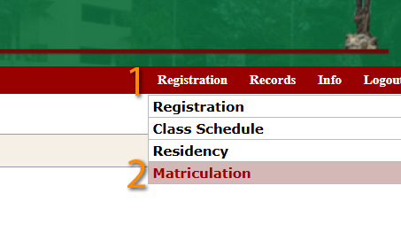
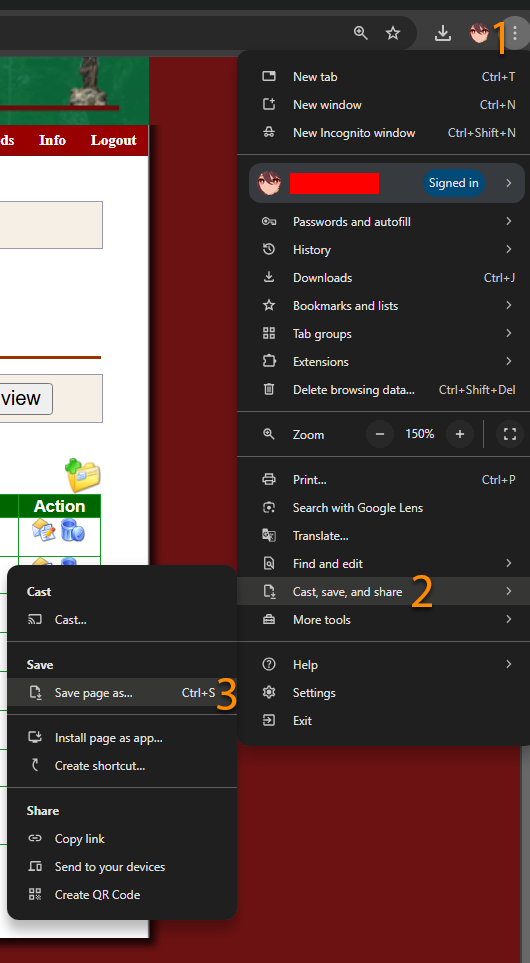
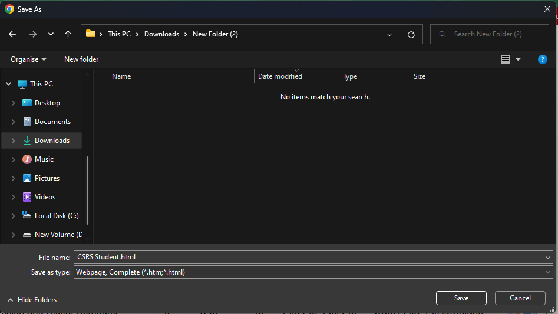
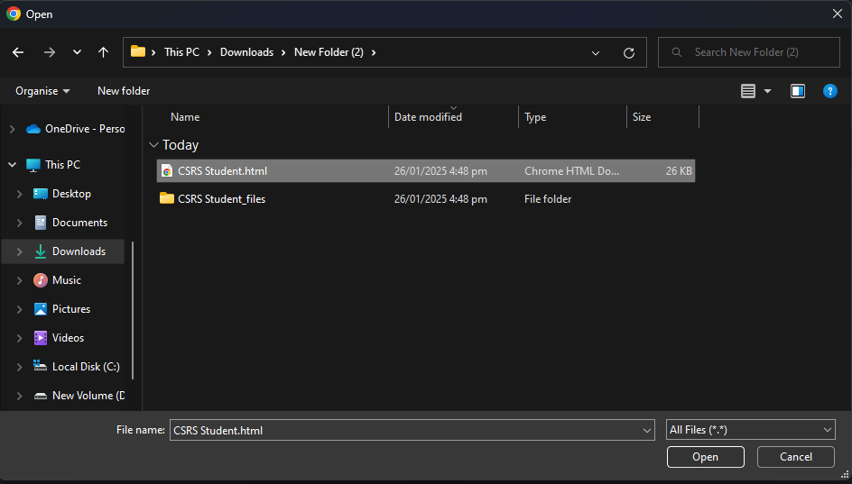
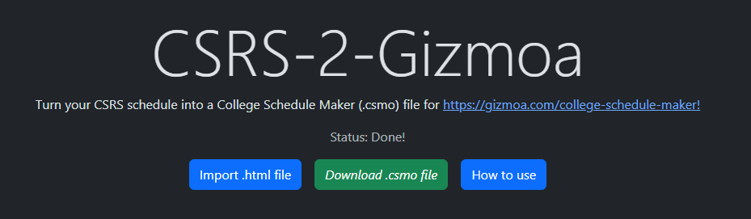
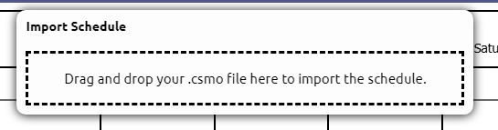
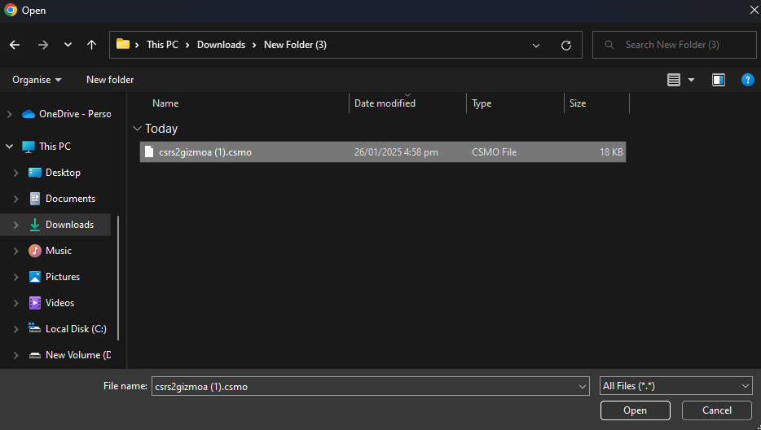
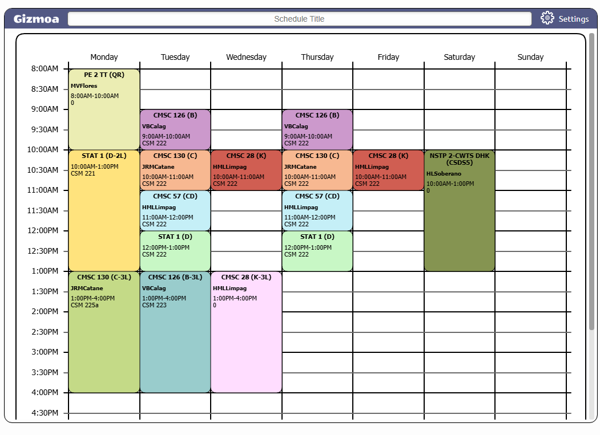

This is a tool that converts your enlisted courses from the UPMmin CSRS page to a .csmo file which can be opened in College Schedule Maker, making interpreting schedules much easier and done in a few clicks.
Head to the Matriculation Page of the CSRS website.

From the main page, select Registration > Matriculation
From there, be sure to select the correct semester, year level, and be sure to click on GO VIEW and that your matriculation does indeed appear.
 Save the webpage.
Select on the Import button
Select the .html file you have saved.
It will automatically start converting for you, if no errors occur, it should be available to download.
Select Import
Click anywhere here to open the file dialogue. Alternatively, you can drag and drop the .csmo file here.
WARNING: Any previous schedule in the site will be overwritten, you will be asked to CONFIRM first before proceeding with importing. Verify that you are sure.
And you're done! Your CSRS schedule should now be more human-readable in this website!
